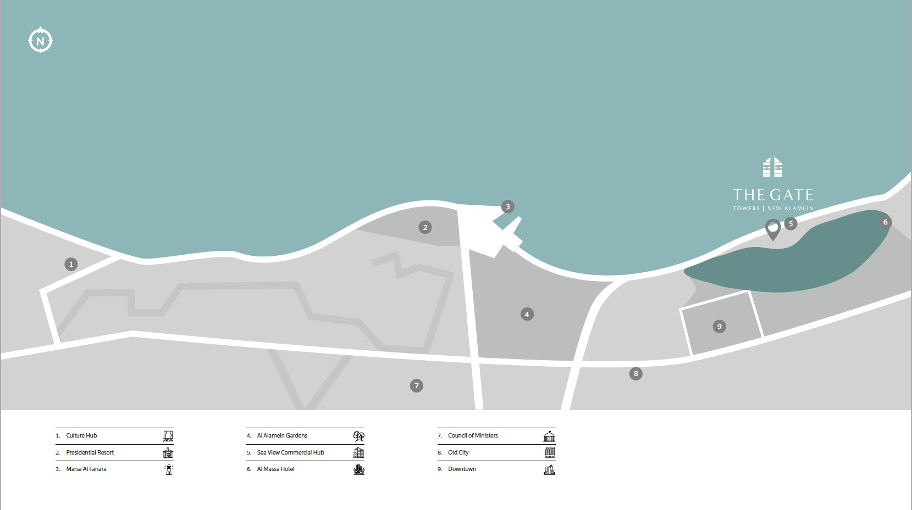

The New Alamein City, taking up more than 48,000 feddans of land will change our perception of the North Coast experience from a temporary visiting spot to an all-year round destination. The fourth-generation, self-sustainable city will beat to a modern rhythm suitable for aspiring individuals to live a well-balanced life with its parks, schools, universities, hospitals, commercial and retail areas. The city is planned to accommodate more than 3 million people by 2030.
The Gate Towers are truly the gateway to the New Alamein. Standing as two guardians split by a road that leads straight to the shore, the Gate Towers are a grand welcoming gesture, acting as the first entry point of the city to the Mediterranean Sea and Egypt’s North border.
The Gate Towers is made up of two podiums that open the scene to the spectacle of the city. The grand towers consist of 44 floors with a range of studios and four-bedroom apartments. The two grand pinnacles stand on a 5-floor podium filled with amenities and services for the homeowners of the tower, spoiling them like the fanciest high-end hotel.
We tend to stand at a gate patiently waiting, overshadowed by its grandiosity and solemn position, comparing our own size to its height in awe.
While we wait, we begin to imagine what experience it could hold for us beyond its landmark stature. That is where the Gate Towers deliver to our imagination.
Standing as Egypt’s North gate, the Gate Towers introduces New Alamein City rightfully as an incomparably new experience Egypt hasn’t seen before. There’s no better introduction to an uncompromisingly luxurious beginning.
The massive stance of the towers as grand gates to the Alamein City gives viewers a metaphorical thought about big opportunities and adventurous beginnings. They stand as the true gateway to the city, representing an icon that will be known for years to come.
The Gate Towers is made up of podium that open the scene to the spectacle of the city. The grand towers consist of 40 floors with a range of studios and four-bedroom apartments.
The grand pinnacle stands on a 4-floor podium filled with amenities and services for the homeowners of the tower, spoiling them like the fanciest high-end hotel “Al-Massa Hotel”.
| Unit |
|---|
| Area: 194 m² |
| View Floor Plan |
Brochure is developed and given to us by City Edge, the official marketing company that specialist in that field, giving all what the customer will need to make his decision.